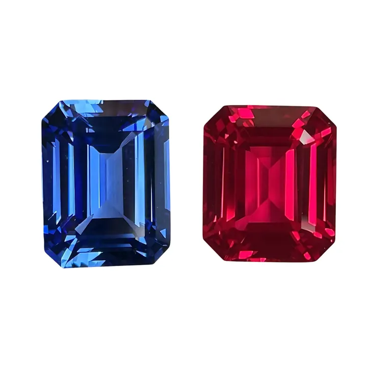

星光效應：三組針狀物織出的六道光芒
六道光芒不是畫上去的，是三組針狀內含物在寶石裡排隊反射的結果——星光，是內含物的交響曲。

核心定義
星光效應（asterism）是指弧面切磨的寶石，在單一光源照射下浮現「六道光芒」的現象——最經典的是星光紅寶石與星光藍寶石。這些光芒不是貼上去的，而是寶石內部三組、彼此呈 60° 夾角的針狀內含物，把光線沿特定方向反射到表面所織成的「星光」。
針狀物通常是金紅石（rutile，TiO₂）或赤鐵礦等礦物針晶，在剛玉結晶時沿著六方晶系的三個軸向析出。弧面切磨時，工匠讓內含物平面與弧面平行，光線打上去，三組反射疊加，就成了一道完整的三芒×2＝六道星光。
特徵與分類
| 要素 | 條件 | 說明 |
|---|---|---|
| 內含物 | 針狀且定向排列 | 金紅石/赤鐵礦針晶 |
| 排列 | 三組 60° 夾角 | 對應六方晶系軸向 |
| 切磨 | 弧面（cabochon） | 弧面頂部與針晶面平行 |
| 光源 | 單點光源 | 多光源或散射光下星光模糊 |
| 星芒 | 六道、中心交會 | 完整清晰為佳 |
星光寶石的等級看五件事：星光是否完整（六道都要）、中心是否集中、針狀物是否細密均勻、底色是否漂亮、以及星光強弱。好的星光寶石，轉動時光芒會「滑動」——像液體一樣流動，這是最迷人的細節。
科學原理
星光的物理是「定向散射與反射」：針狀內含物沿三軸定向，當光線垂直照射弧面時，每一組平行針晶把光沿與針晶垂直的方向反射，形成一條「光帶」；三組針晶＝三條光帶交叉成六道星芒。針晶越細密均勻，星光越銳利。
所以星光效應與寶石「乾淨度」天生矛盾：要星光，就要有大量定向針狀內含物；要乾淨通透，就沒有星光。這就是為什麼星光寶石不以「淨度」論英雄，而看「星光品質＋底色」。
鑑定與鑑別方法
- 用單點光源（如手機手電筒）在暗室照射，檢視星光完整性
- 看星芒是否「滑動」：真星光隨光源移動而流動
- 顯微鏡確認針狀內含物的定向排列
- 警惕「畫星」與「雷射刻星」：假星光位置固定、無滑動感
- 檢查底色：天然星光寶石通常帶內含物特有的絲絨感
市場行情與保養建議
市場上，星光紅寶石與星光藍寶石是收藏家的寵兒：好的星光寶石（星光完整、底色佳）單克拉價可達高檔；劣質或星光模糊者價格平平。緬甸星光紅寶與斯里蘭卡星光藍寶是經典來源。
選購注意：星光寶石多為弧面、無法像刻面寶石那樣折射亮光，所以「美」的標準不同——看的是星芒與質感，不是火光。
常見誤區
天然剛玉星光以六道為主；少數「十二道」來自雙重內含物系統，極罕見。市面號稱「八道星」的多是人工製品或畫星，要小心。
恰恰相反，星光寶石靠內含物吃飯。用「淨度」衡量星光寶石是標準錯配——它的價值在星光的品質。
冷知識
斯里蘭卡盛產優質星光藍寶，當地人稱它為「會流動的星光」。島國的寶石傳統，與星光傳說密不可分。
月光是散射光，星光會變淡但仍在。傳說古人把星光寶石當作「引路的星星」，戴著它走夜路。
反直覺觀點
針狀內含物在刻面寶石裡是減分項，在星光寶石裡是價值核心。同樣的「瑕疵」，換個切磨方式，就成了傳奇的星光——珠寶的世界，沒有絕對的優缺點。
針晶太少，星光淡；針晶太密太濁，底色髒。真正的頂級星光寶石，是針晶細密到肉眼難察、卻又定向完美——「髒得恰到好處」，是地質的藝術。